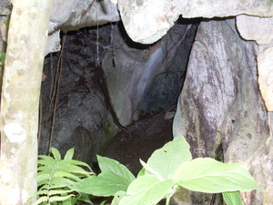

seled2 
/sɔlɔd/
n.
“inside”
1.
n.
inside
Wrd.Gloss: inside
Seled kew kayi te baley ku su egkekeen ki kasilè.
Come into my house and let's eat sweet potato.
Ant. lihawang
Ant. gawas
Lihawang kew kayi su egmangekelag ki.
Get out here we will be playing.
Gawas kew kayi su egpitew ki te aldew ne eglineb.
Get out here will witness the sunset.
Eng. inside; interior; in
Tag. loób
Ceb. sulod
Ilo.: unég
OCM: Miscellaneous Structures (349)
Online dict status: -
Usage level: F
n.
(paseled, pA-) passage
Eng. passage
Online dict status: -
Usage level: M
n.
(seleranan, -an-an) passage
Eng. passage; entrance
Online dict status: -
Usage level: M
vi.
for someone or something (egseled, migseled/inseled, agent, eg><ø-) to enter something (egseleran, inseleran/migseleran/pigseleran, location, eg><an-)
Egseled key.
We will come/go in.
Syn. lasud
Eng. enter; go in
Tag. pumások
Ceb. musulod
Ilo.: umunég
OCM: Locomotion (481)
Online dict status: -
Usage level: F
2.
v.
for someone (egpaseled, migpaseled/impaseled, agent, eg><ø-pA-) to admit someone else (egpaseleren, impaseled/migpaseled/pigpaseled, patient, eg><en-pA-) in an organization (egpaseleran, impaseleran/migpaseleran/pigpaseleran, location, eg><an-pA-)
Eng. admit, to; accept, to
Online dict status: -
Usage level: M
3.
vi.
for someone or something (egseled, migseled/inseled, agent, eg><ø-) to be in tune
Eng. in tune; tune, in
Online dict status: -
Usage level: M
Updated by: RJH,RJH,AAA,RJH,QDL,RJH
Last updated: 11/Jun/2013
"seled" in text "A Father Tells His Children about School"
"seled" in text "A Father Tells His Children about School"
"seled" in text "A Father Tells His Children about School"
"seled" in text "Morning Darkness"
"seled" in text "Morning Darkness"
"Egseled" in healthbook "Nekey-a ka kahew?"
"egseled" in healthbook "Mania teg pakapatey kag iindes?"
"egseled" in healthbook "Migderalu si Junjun te malariya"
This page last updated: 28-Dec-2019
Copyright © 2009-2014, Matigsalug Language Christian Association, Inc